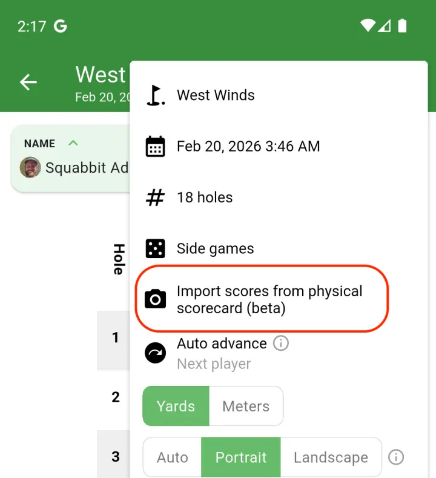

Import scores by taking a photo
Tired of manually entering every score after a round? Now you can just take a photo of your scorecard and let Squabbit handle the rest. Our new AI-powered score import reads your scores from the image and fills them in for you.

This works with paper scorecards, printed scorecards, or even a photo of your simulator's score screen. If you play on a simulator like GSPro, just snap a picture of the final scores on your display and import them directly into your round.

How it works
Open the scorecard for your round, tap the menu, and select "Import scores from physical scorecard". Take a photo or pick one from your gallery and Squabbit's AI will read the scores from the image.

After processing, you'll see a preview of all the parsed scores in a table. You can tap any score to fix it before confirming. Squabbit will automatically match the names on the scorecard to the players in your round.

This feature is currently in beta. The AI does a great job with most scorecards, but we always recommend reviewing the scores before confirming. For more details, check out the full help article.